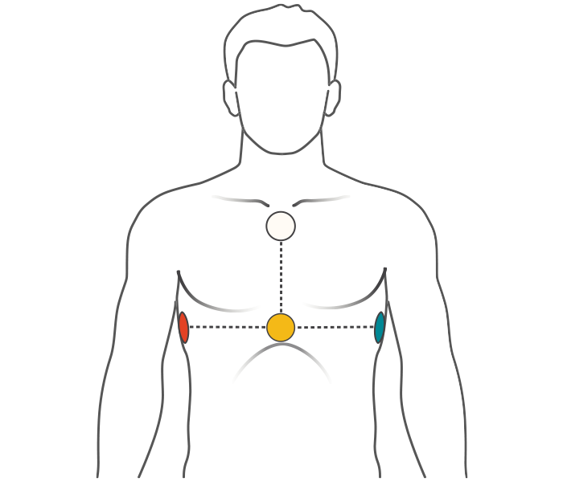
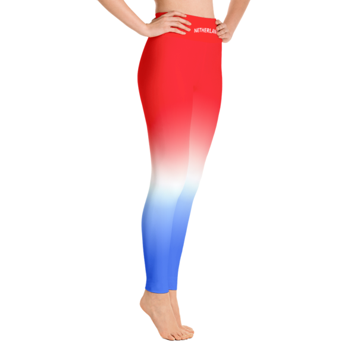
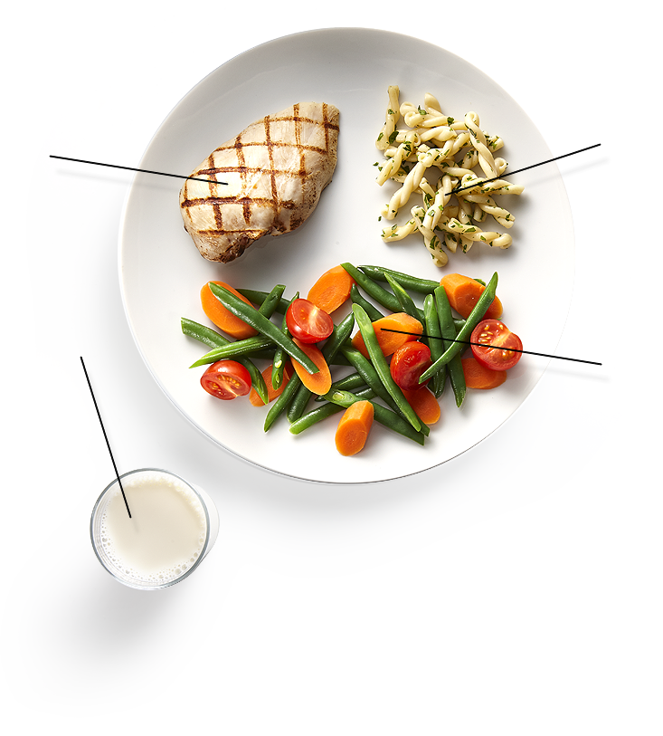

Envie de vous reprendre avant le début de l'été, vous êtes au bon endroit, l'équipe VeeraTamizha va vous aider à atteindre vos objectifs !
Nous avons décomposé le corps en trois parties.D'un côté, nous avons le haut du coprs , le bas du corps et ensuite suit la nutrition.
La nutrition joue un rôle très important dans le sport.Et pour cause ,par exemple, si l'on veut maigrir 70 % de, est dû à la nutrition.
Haut du corps

Les muscles traités :
Pectoraux
Triceps
Biceps
Dos
Trapèze
Abdos
Voir les exercices
Bas du corps

Les muscles traités :
Cuisses
Fessiers
Mollets
Quadriceps
Fessiers
Ischio-jambiers
Voir les exercices
Nutrition

Les thèmes abordés:
Les 7 Règles du à respecter obligatoirement pour perdre du poids
Alimentations à privéligier
Voir les exercices